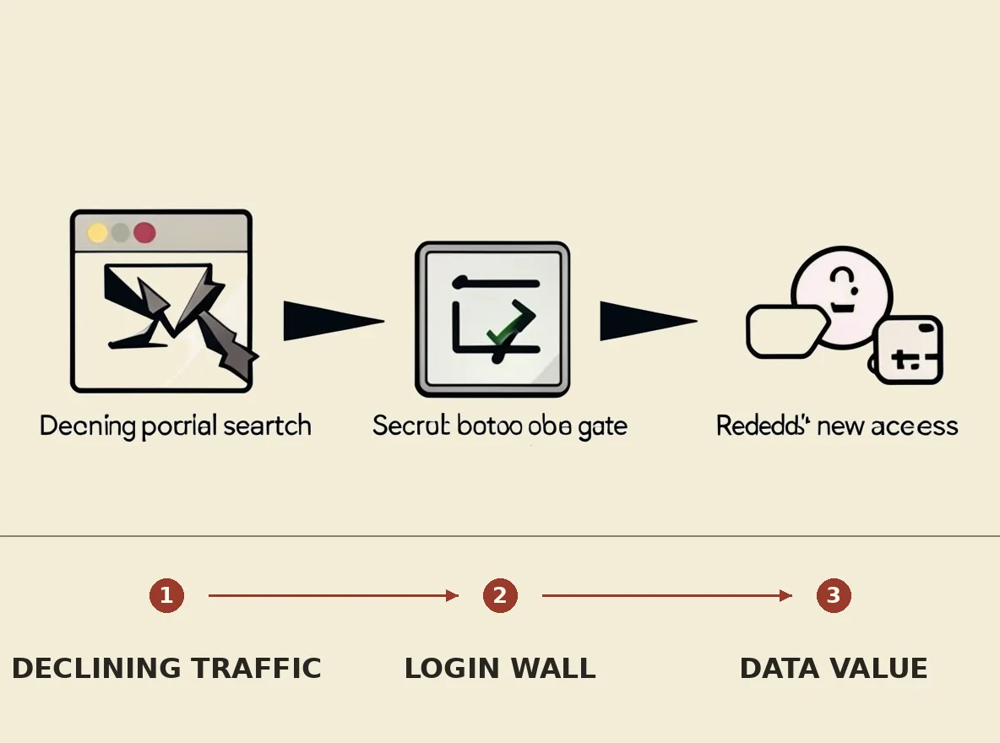

Reddit is transitioning to a primarily logged-in user experience in response to declining search traffic referrals caused by AI-powered search summaries. The company reported over 1 million fewer weekly search referrals in October and a drop in U.S. daily active users, prompting a strategic shift to protect its data from AI scraping and enhance monetization. This move aims to secure lucrative data licensing deals and increase advertising revenue from its more valuable logged-in audience, helping Reddit adapt to the evolving AI-centered web despite user growth challenges.